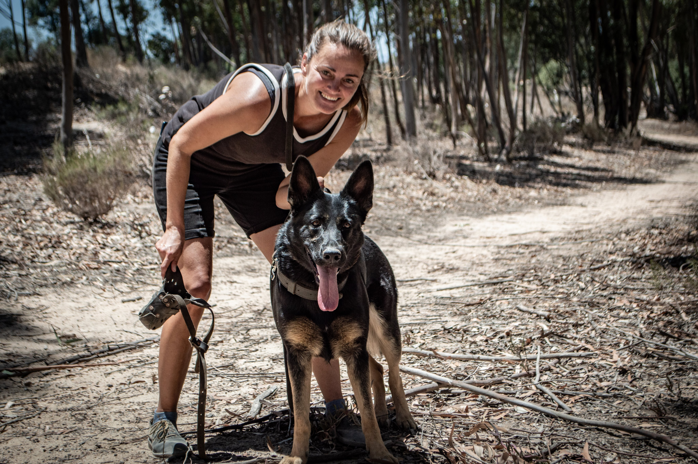
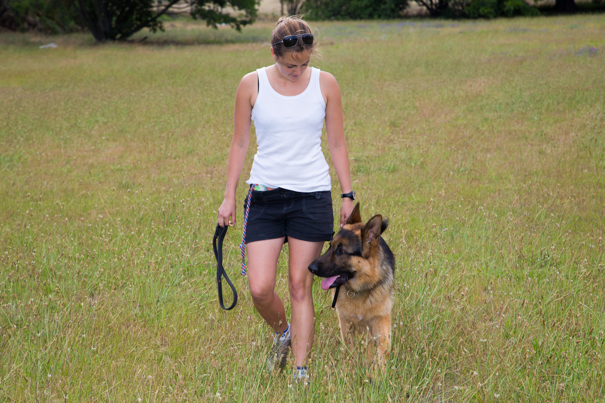

About
My approach is focused on cultivating the right attitude — calm, composed, cooperative and respectful in obedience; brave and resilient under pressure in protection.
At the core of my training philosophy lies a relentless pursuit of that which is true and real. The dog training industry is filled with deception and illusion — for the most part selling pseudo versions of the real thing.
After nearly a decade of exploration, trial, error, and a few very rough personal experiences, I’ve cut through the noise. I focus only on methods that generate real results: functional, practical, reliable, and lasting.


My clients’ happiness is my success. I consider it my responsibility to care for, and ensure the success of, both two-legged and four-legged clients.
Their trust in me is a gift. I am privileged to be in a position that allows me to empower owners, strengthen the owner-dog relationship, and support life-changing transformations.
While my background includes formal training and education, I choose not to list credentials here. The truly valuable knowledge was gained through experience, the willingness to challenge the norm, the courage for self-honesty, and a dedication to constant improvement.
The proof is in the work. The results speak for themselves.